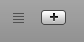

A row is a horizontal division of a document that contains all the information for one list item. It contains one text box for each column, and you can enter any text you wish into each box. You can add as many rows as you like into a Delectus document, and each one can have any text you like.
To add a row, click the Add Row button at the bottom left corner of the Delectus window:

When you click the Add Row button, Delectus immediately adds a new empty row at the end of the list. The new row doesn't look like much at first; you have to add some text to at least one of its columns before there is much of anything to notice about it. When creating it, Delectus highlights the new row, to let you know it's there.
Removing Rows
You can remove a row using the List menu. Select the row you want to delete, then pull down the List menu and choose Delete Row. Delectus removes the selected row. If no row is selected then Delectus doesn't enable the Delete Row item.
Showing Deleted Rows
When you delete a row, Delectus doesn't really remove it completely. It marks the row deleted and hides it, but it keeps the data, in case you change your mind. You can see if there are any deleted rows in your document by clicking the Show Deleted Items button at the bottom right corner of the window.

Click the Show Deleted Items button to turn it on, and it reveals any deleted columns and rows in the document. It also displays a count of deleted columns and rows next to the button. Deleted items are displayed in red.
If you want to permanently remove any deleted items that may be in your document, you can use the Purge Deleted Items menu: pull down the List menu and choose Purge Deleted Items. Delectus displays a dialog to give you a chance to change your mind before permanently removing the items; if you confirm, then it removes all deleted columns and rows. Make sure that's what you want to do; once you confirm that you want to purge the deleted items, they're gone forever.